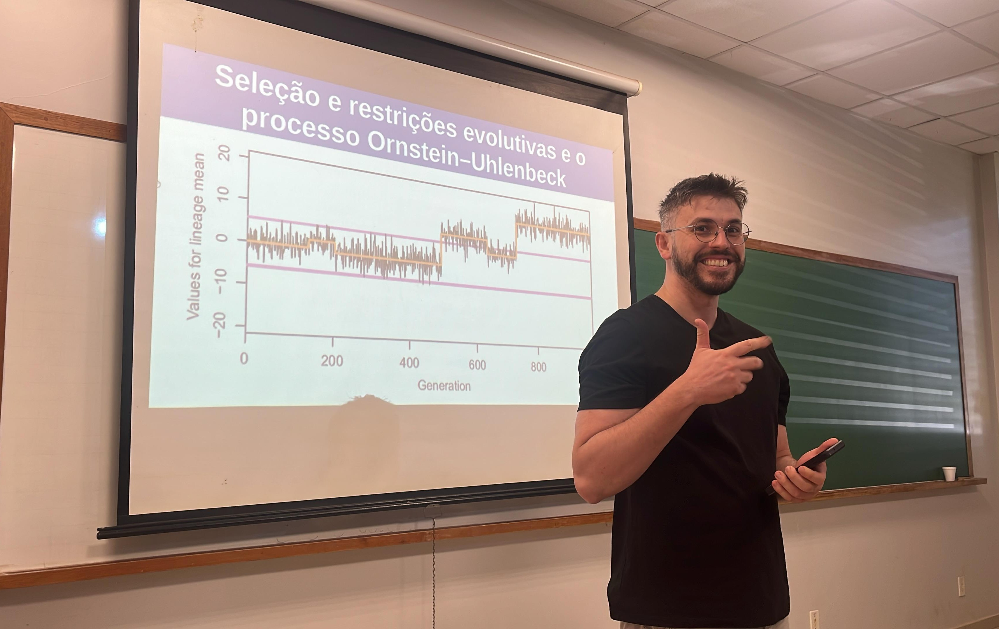
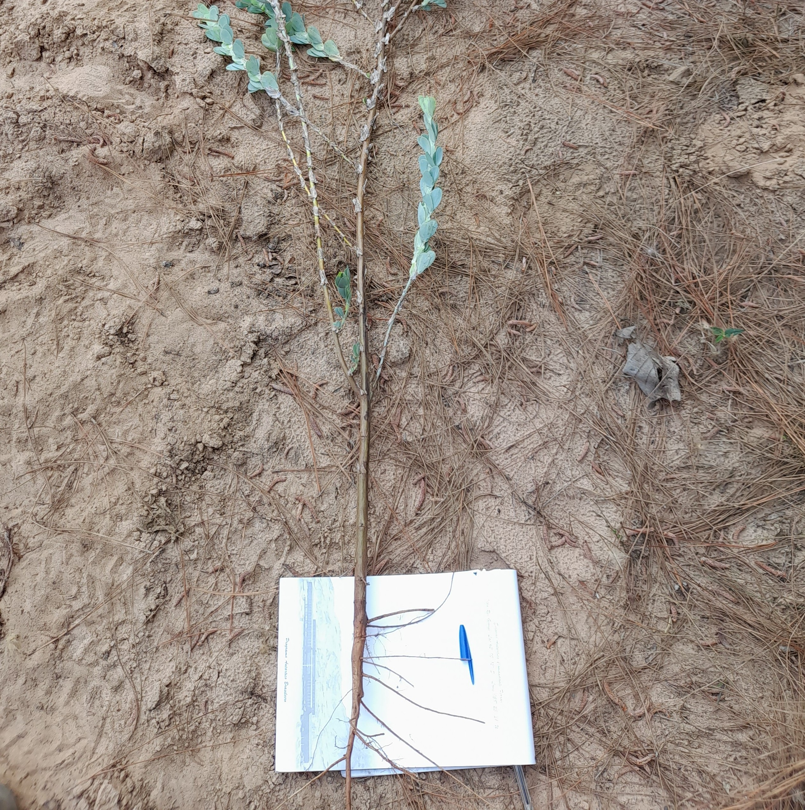
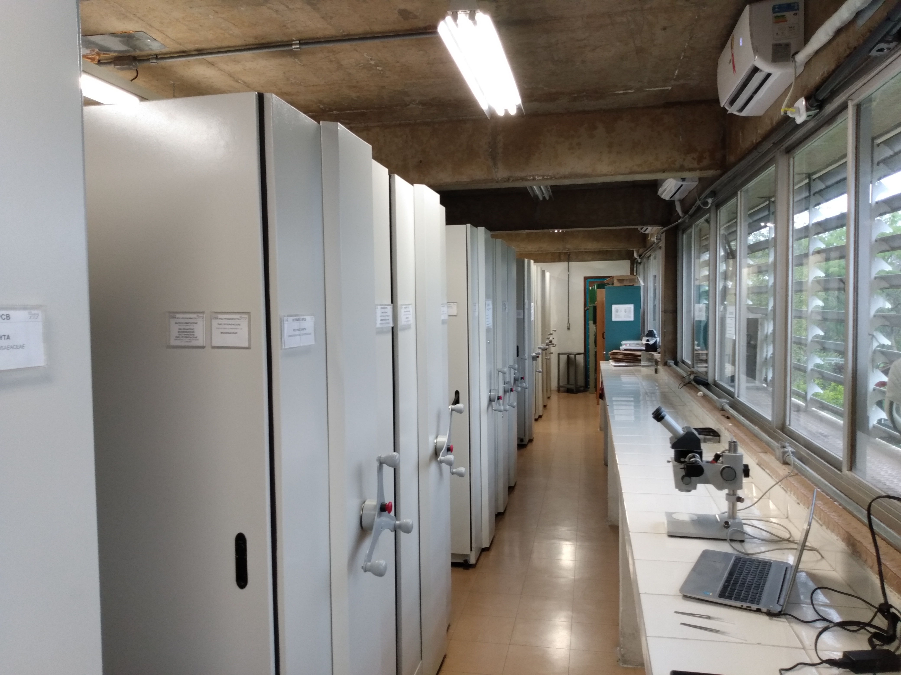
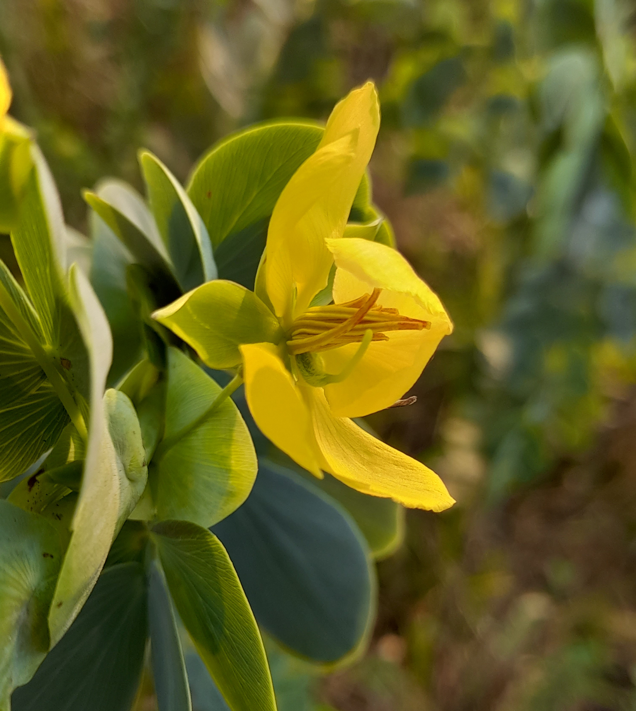

Eduardo Nery
Pesquisador Pós-Doutor · Universidade Federal do ABC (UFABC)
Bolsista FAPESP
- Fixação biológica de nitrogênio
- Macroevolução
- Métodos filogenéticos comparativos
- Genética de populações
- Mutualismos planta-microrganismo
Sobre
Licenciado em Ciências Biológicas pela Universidade Federal de Santa Catarina (2017), com período-sanduíche na Indiana University (2013–2014) pelo Ciência Sem Fronteiras da CAPES. Mestre em Biologia de Fungos, Algas e Plantas pela UFSC (2019). Doutor em Evolução e Diversidade pela UFABC (2023), com estágio doutoral no Jardim Botânico de Nova York (2021–2022). Tem experiência com genética de populações, reconstrução filogenética e métodos filogenéticos comparativos.
Seu maior interesse é estudar a diversidade, a distribuição e a evolução de linhagens de plantas capazes de fixar nitrogênio por meio de mutualismos com microrganismos. Atualmente investiga quais condições ambientais propiciam a evolução e a persistência dessas plantas no território brasileiro.



